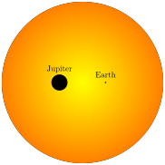

Exoplanets
Jed Rembold
March 1, 2023
Announcements
- HW3 is actually posted!
- Reminder that the new due date is new Friday
- HW2 Partner Reflections here
- Make sure you fill it out! I’ll deduct 7.5% from your personal HW2 score otherwise
- Responses otherwise have no effect on scoring
- I cancelled the midterm project
- Quizzes graded!
Quiz Talk
- Be aware that even if you split HW problems across partners, you are still responsible for knowing and understanding the content from all questions
- I think many could have benefitted from a bit more studying, or
perhaps just looking at the study materials a little
- Some of this was on me as well, as they got posted a bit later than I’d hoped
- Raw class average was a 71%, the max a 100%
- Quizzes can be a bit more punishing owing to limited points, plus
this was the first one in this class so perhaps you didn’t know what to
expect
- As such, I’ve added 1.5 points to the score on the back of your quiz in the gradebook
Recap
- Fourier analysis gets tricky (or impossible) with non-uniform
observations
- Introduces noise to the Fourier Transform
- Not a straightforward method to account for the different observation spacings when needing to calculate the frequency ranges
- The Lomb-Scargle Periodogram is an approach that works well for
non-uniform data
- Requires you to specify the range of angular frequencies / frequencies / periods that you want to computer the power over
- Aliasing will generally be a factor you need to content with
Discussing Today
- Phase Folding
- Detecting Exoplanets
- Astrometric and Doppler Methods
Phase Folding
Periodograms are excellent for determining the frequency / period of hidden signals, but they don’t let you see those signals
Often times want to go one step further and use the found period to “fold” the signal over again on itself
- Snippets of the signal that may have been captured by very different observations get properly aligned or stacked
The phase of the signal describes how far is signal is through its period
Calculating phase is a classic example of using the modulo operator:
phase = times % period
Visual Phase Folding
- Often times you’ll see the phase scaled by the period, so that it starts at 0 and ends at 1
- Be careful! Folding at integer multiples of the true period may look clean, but will contain more than a single oscillation
- Notebook Demonstration (requires the ipywidgets package)

Why are planets so hard to see?
- Exoplanets are planets orbiting stars that are not our own Sun
- Commonly far too tiny to be observed directly
- Recall we can’t even resolve most stars
- We must then rely on other, more subtle measures

Gravity Tugs!

- Planets and their host stars actually orbit the center of mass between the planet and its star
- In most system, this point might still be inside the radius of the star, but it is not at the center of the star
- As the star oscillates then, you get a bit of “wobble”
- Most pronounced for massive planets far from their host star
The Astrometric Method
- Make extremely precise measurements of a star’s location against its background stars
- Need slightly ridiculous levels of precision to do well
- More “obvious” planets would have longer orbits, and thus we would need to observe longer to see their effects
- These types of measurements are one of the main aims of the GAIA
mission
- Hangs out at the \(L_2\) Lagrange point (same as Webb!)
- Needs to know its exact position to within 150 m every day!
Wiggle Wiggle
- Often, we are not viewing the plane of an exoplanetary system directly from the top
- How we see this “wiggle” from Earth depends on how the planets orbit
is oriented relative to us
- A perfectly “top down” view would have us seeing the planet making little circles
- A perfectly “side” view would have us seeing the planet move towards us and away from us on the left and right sides
- In general, it is easier for us to detect and measure the forwards and backwards motion, but instruments like Gaia can detect the tinier circular motion for some systems
Doppler Wiggle
- The idea then is to monitor the dominant frequency of light emitted over a period of time
- Should result in a sinusoidal curve as the star wiggles
- The amount of wiggle will depend on both the mass of the orbiting planet and our perspective

Full Example
Beginning to extract planetary properties
- In general, to understand any exoplanet, you must first understand its parent star
- This is often considerably easier, since the star is big and bright
- Several parameters in particular are useful to know:
- The mass of the star
- The size of the star
- Both generally require knowing the distance to the star, but otherwise can be worked out from luminosities or location on the HR diagram
Planetary Period and Distance
- If you have the period of the star, then you have the period of the
planet
- Both move in lockstep about the center of mass
- If you have multiple planets, you can separate the different components from the stars motion
- Extracting the distance to the planet / semimajor axis requires application of Kepler’s 3rd law along with the center of mass location: \[\text{Kepler's 3rd: } \frac{GM_{tot}}{4\pi^2} = \frac{a^3}{p^2} \qquad\qquad\text{Center of Mass: } M_1a_1 = M_2 a_2 \]
Planetary Mass (Part I)
- Combining \(a_1\) and \(a_2\): \[ a = a_1 + a_2 = a_1\left(1 + \frac{a_2}{a_1}\right) = a_1\left(1 + \frac{M_1}{M_2}\right) = \frac{a_1}{M_2}\left(M_2 + M_1\right) = \frac{a_1 M_{tot}}{M_2} \]
- Plugging into Kepler: \[ \frac{GM_{tot}}{4\pi^2} = \frac{1}{p^2} \left(\frac{a_1 M_{tot}}{M_2}\right)^3 \]
- If you know \(a_1\) by direct observation, then you are done, and can solve for \(M_2\)!
- Otherwise you need to write \(a_1\)
in terms of a velocity
- If you assume mostly circular orbits: \[v_1 = \frac{2\pi a_1}{p} \quad\Rightarrow\quad a_1 = \frac{v_1 p}{2\pi}\]
Planetary Mass (Part II)
- Plugging that back into Kepler: \[ \frac{GM_{tot}}{4\pi^2} = \frac{1}{p^2} \left(\frac{a_1^3 M^3_{tot}}{M^3_2}\right) \]
\[ \frac{GM_{tot}}{4\pi^2} = \frac{1}{p^2} \frac{M^3_{tot}}{M^3_2} \left(\frac{v_1 p}{2\pi}\right)^3 \]
\[ \frac{GM_{tot}}{4\pi^2} = \frac{1}{p^2} \frac{M^3_{tot}}{M^3_2} \frac{v_1^3 p^3}{8\pi^3} \]
\[ G = \frac{M^2_{tot}}{M^3_2} \frac{v_1^3 p}{2\pi} \]
\[ M_2 = \left(\frac{M^2_{tot}}{G}\frac{v_1^3 p}{2\pi}\right)^{1/3} \]
Some Caveats
- The true velocity is only what is measured at the peak of the Doppler curve if you are viewing the orbit perfectly edge-on
- In general: \[ v_{obs} = v_1\sin(i)
\] where \(i\) is the
orbital inclination (\(0^\circ\) if viewing face-on, or \(90^\circ\) if viewing edge-on)
- If the inclination angle in unknown, then technically you are finding a minimum mass
- If the eccentricity is known, then: \[ M_2 = \left(\frac{M^2_{tot}}{G}\frac{v_1^3 p}{2\pi}(1- \epsilon^2)^{3/2}\right)^{1/3} \]
Practice
- The file here contains velocity information determined from the redshift/blueshift of a star with a single planet orbiting it.
- You can assume the planet is traveling in a mostly circular orbit.
- You know that the parent star has a mass of \(2\times10^{30}\) kg.
- Determine:
- The period of the planet
- The minimum mass of the planet
HW3 Partner Check-in
- If we still have time, take a quick moment to check in with your partner(s) about HW3
- How/when you want to be working on it.
- Problem 3 has considerably more to it than Problems 1 and 2